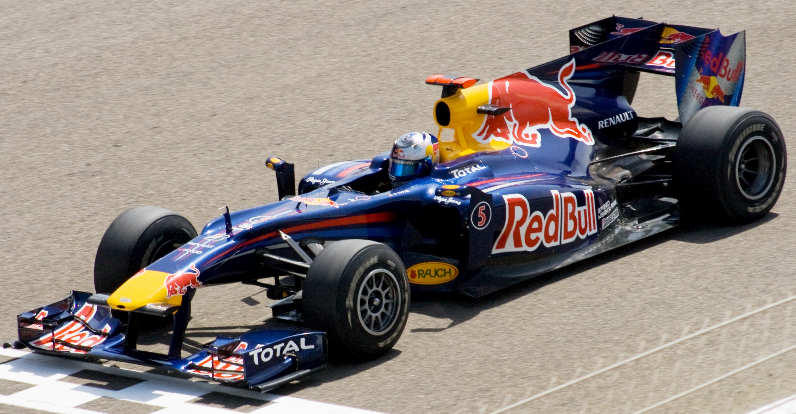

2010

Le più importanti scuderie che hanno partecipato al Campionato Mondiale di Formula1 2010 erano:
- RedBull-Racing
- Ferrari
- McLaren
- Mercedes
Il mondiale è stato vinto da Sebastian Vettel che per la prima volta fece vincere alla scuderia RedBull-Racing il primo mondiale .
Vettel durante il suo contratto quinquennale vinse 4 mondiali (dal 2010 al 2013).
Vettel successivamente firmò un contratto con la Ferrari con cui non vinse mai un mondiale.
HOME
Tutti i diritti sono riservati
Sito realizzato da Boniotti Elisa, Lucchini Davide, Tassone Thomas